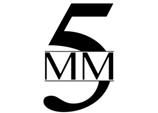

Standard Book Video
A Standard Book Video can help you create and maintain a meaningful presence online in the competitive marketplace. Video book videos are an excellent addition to your press releases, social media sites, and personal websites to help your book stand out in the crowd.
By posting your video on social media sites and personal websites you can reach a valuable audience of online video viewers and attract potential readers. Video marketing helps you engage your audience on a level they can’t ignore.
Take a look at Ernst Aebi's Standard Book Video showcasing his book Seasons of Sand Sahara.
Our Standard Book Video includes the following features:
- Creation of a custom-made video book video, approximately 45 to 60 seconds in length
- Storytelling through text and 2-D graphics and image
- Distribution of your video to YouTube in order to maximize exposure
- Web streaming capability
- Review of your video for TV and film consideration by 5 More Minutes
You will own all the rights to your book video and will be provided with the final video file to share with readers, friends, and family and include in your marketing materials.
Revisions: You will be able to make one round of revisions to your video at no additional cost. Any additional rounds of revisions will cost an additional fee. Acceptable changes include:
- Simple text changes
- Changes in font size
- Corrections or additions to book and author information
- Changes to audio levels
- Image changes (if you provided your own or you feel an image is offensive)
Once your video is completed, it will be considered for TV or movie adaption by 5 More Minutes.
- If 5 More Minutes is interested in working with you, they will directly contact you to explain their plan of action to gauge your interest.
- If after reviewing your video 5 More Minutes decides not to engage with your concept, it will then be entered into our Hollywood Database, where registered entertainment professionals can browse and search for new material to adapt into feature films and television series.
|
 |
About 5 More Minutes5 More Minutes is a full-service production shingle run by veteran Hollywood executive John Sacchi. Sacchi has spent over two decades in the entertainment industry. Before founding 5 More Minutes, Sacchi spent 15 years as a senior production and development executive at Lionsgate Films where he oversaw films including Confidence, Employee of the Month, They Came Together, My Bloody Valentine, The Possession, Killers, The Last Stand, Addicted, Conan the Barbarian, Punisher, My Best Friend’s Girl, Pride, and Akeelah and the Bee. Some of the current projects 5 More Minutes is developing include an English language remake of Instructions not Included, directed by Anne Fletcher for Lionsgate; Vanish Man directed by Lee Toland Krieger and co-produced for 21 Laps and Lionsgate; Dork Diaries, which is based on the New York Times best selling children's book series and produced for Lionsgate; and the New York Times best selling author's Rogues Gallery, which is being produced for Lionsgate Television. |